My Role: Ideation, Research, Style Guide, Wireframes
Project Timeline: 2 Weeks
Problem
Cancer Support Community Redondo Beach (CSCRB) serves cancer patients and their caretakers with the stated mission “To ensure that all people impacted by cancer are empowered by knowledge, strengthened by action, and sustained by community.”
Research showed the organization underutilizes online technology to drive donations, and users (cancer patients and their caregivers) would benefit from the site being easier to navigate, especially as it pertains to how to get connected to CSCRB.
Challenge
Come up with a website redesign that greater facilitates both online donations, as well as the user's ability to search and sign up for CSCRB's numerous programs. The team also resolved to update the design with something that not only more contemporary in look, but also helps connect the user on an emotional level that is comforting and life inspiring to those in the cancer community. Doing so would help inspire greater trust in getting involved with and donating to the organization.
The team began by seeking inspiration. We developed a moodboard that contained color palettes that were bright and gave off feelings of hope. We wanted to use imagery that showed people being active, cheerful, and showing love and/or comforting one another.
The Process
The first crucial step in redesigning the website was identifying how to streamline the content and help patients and caregivers find what they need to know with greater ease.
An audit of CSCRB's information architecture revealed a dead and outdated links. Most of all the team found much of the content could be consolidated into one section or page.
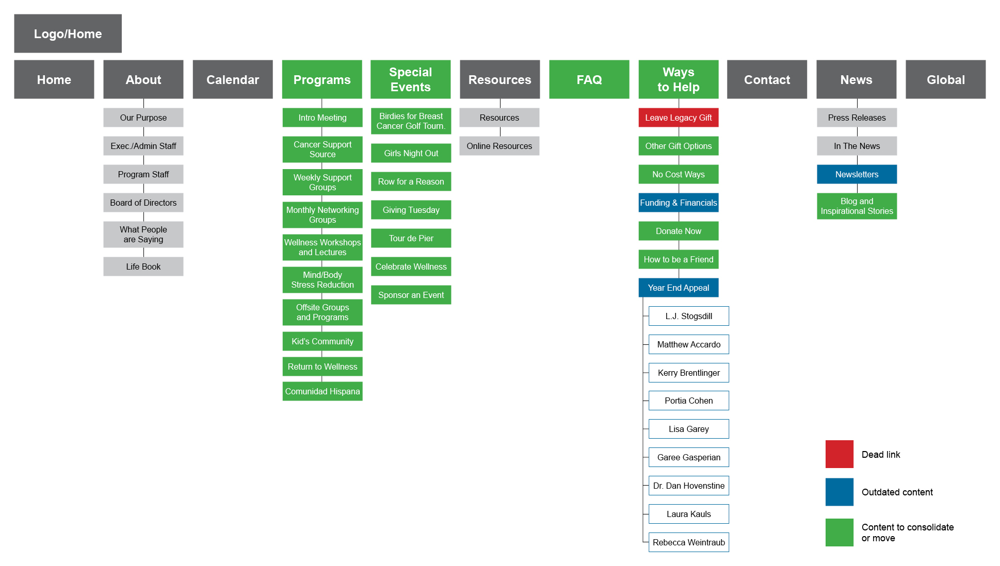
A new sitemap was developed to help streamline/simplify the flow of information and the user's ability to navigate the site. In order to not jeopardize user trust dead links were removed, as were pages that hadn't been updated in a few years and had clearly outdated information. Content found at disperate parts of the site that pertained to financial support were consolidated. The calendar and programs pages were in separate sections and were brought together under the new and aptly named "Get Active" section.
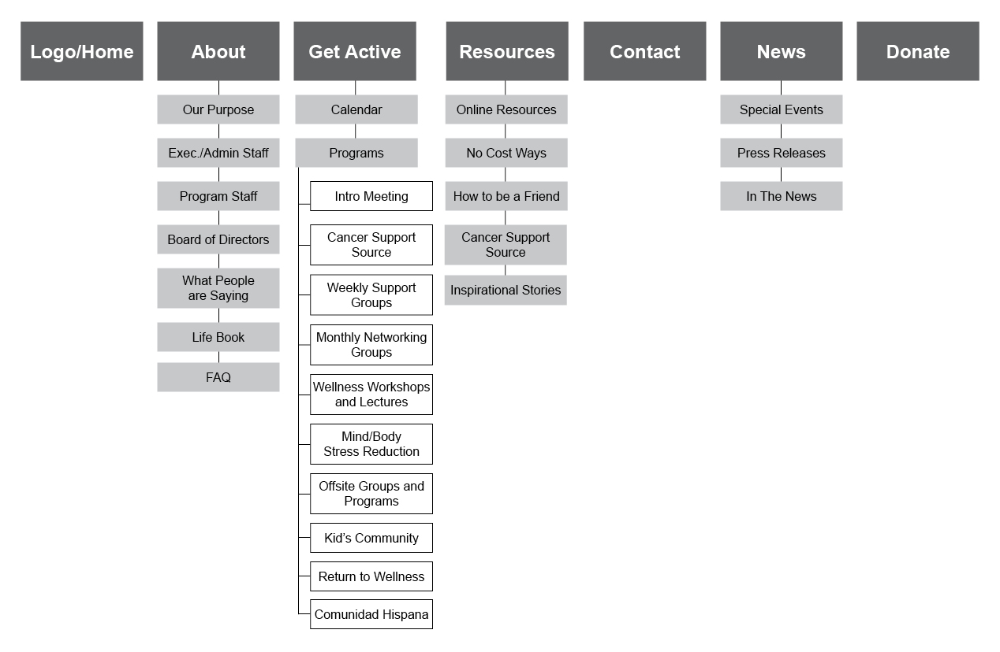
The current CSCRB website is not mobile responsive, so a paper prototype of the mobile responsive layout based on our mood materials was developed. Given the two week timeline the team had to complete the project this was as far as we could go to implement this part of the design.
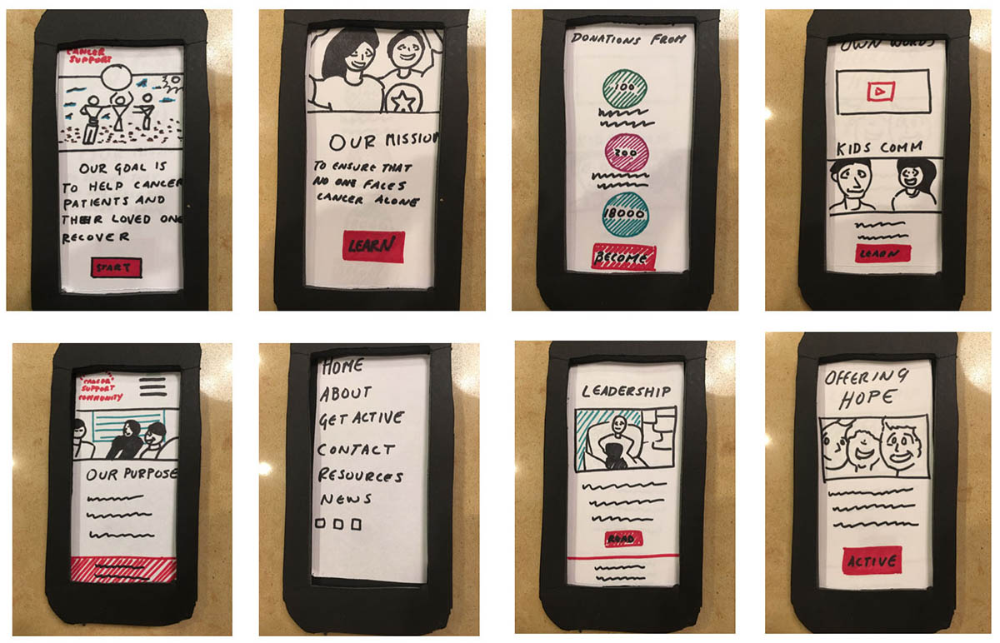
A moodboard-influenced style guide was created so the team could be on the same visual page as we worked on our parts of the project. In addition to colors and imagery that were friendly and life-inspiring, the team chose a typeface (Quicksand) with a contemporary feel, but also had a sense of being friendly, soft, and welcoming. Something that was important to convey to patients and their caregivers.
Wireframes for the new desktop version (selected wireframes are below) was the final step before the development of the high-fidelity prototype. The layout for the informational pages doesn't differ in structure all that much from the original site. We found that the section links to the left with content on the right worked well for navigating the large amount of content. One change we planned to make was to make the left side links and their corresponding content tabs instead of having numerous independent pages that require a page reload. This would make navigation through all of the content faster for the user.
The biggest changes in the actual site design were focused on the areas that needed to updates most, the events calendar and donation flow.
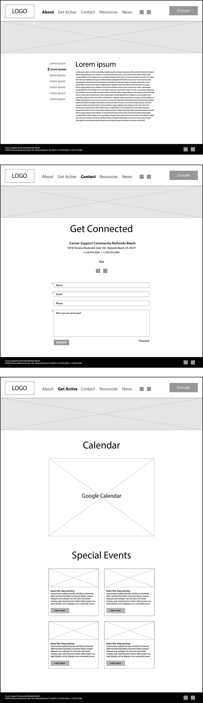
The Design
The home page redesign takes elements from the current home page and gives them their own space. Each space has a call to action, giving users multiple opportunities to move forward through the site. The decision to do this came from the way the home page content has been segmented.
The first section would have a video background showing cancer patients "in action" as a way to evoke life and inspire hope in those who come to the page.
The nav bar starts at the bottom and becomes fixed to the top of the screen when the user scrolls it to that point. The aim of placing the nav at the bottom of the screen to start is to try to emphasize the liveliness of the video background and call to action to see more.
The top navigation reflects the more simplified sitemap and gives the donation button a much more prominent location than is found on the current design.
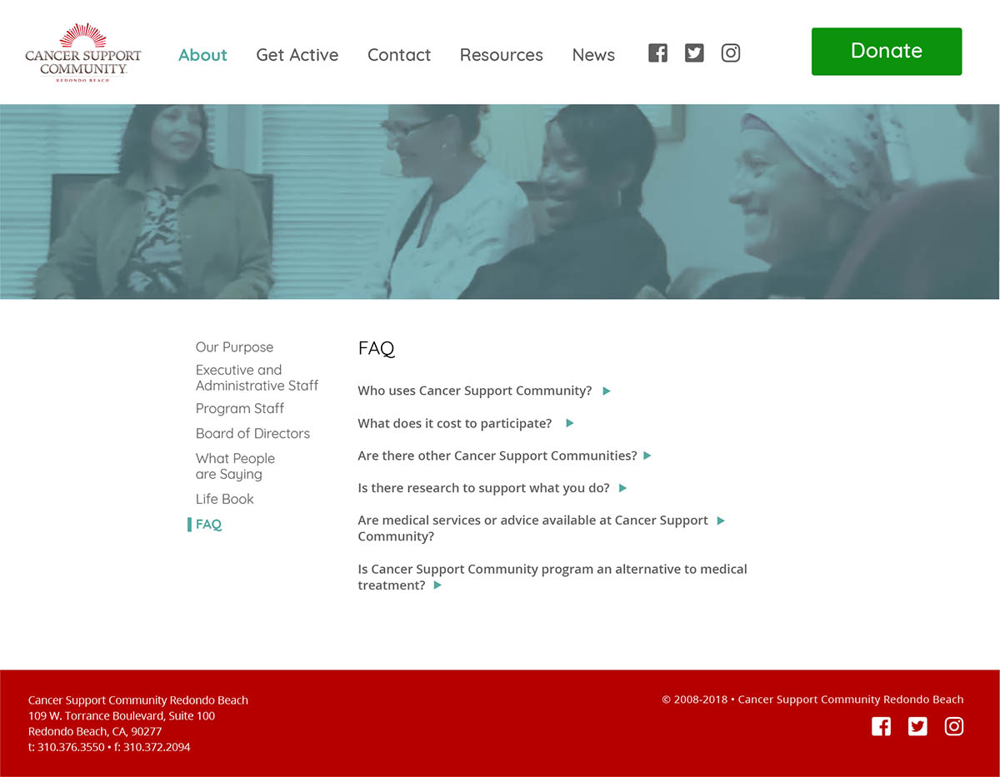
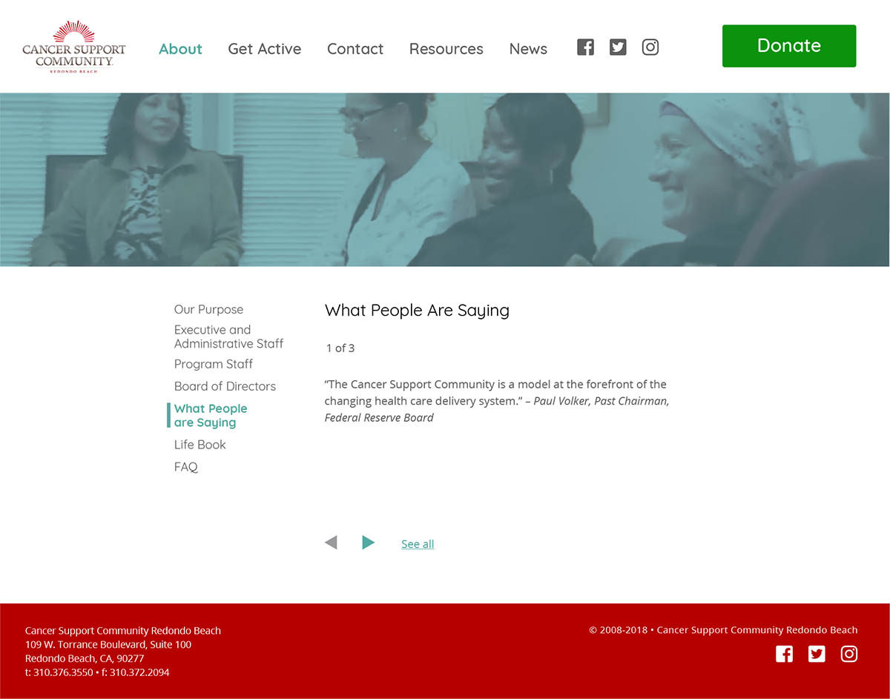
Currently if users wish to donate to CSCRB there are disparate links located throughout the site. With a new donation flow is more centralized users will have a much easier time locating how to give to CSCRB (the main donate button can only be found below the fold on the home page of the current website). Now "donate" has a global presence as part of the top navigation.
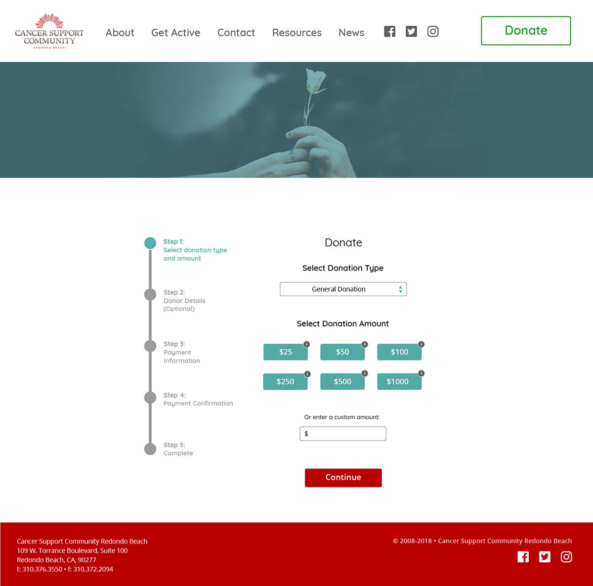
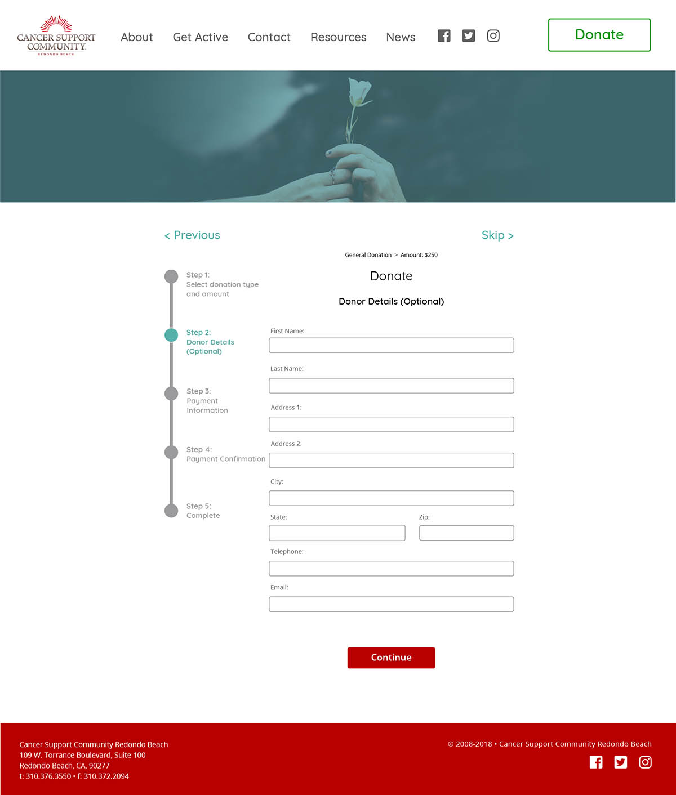
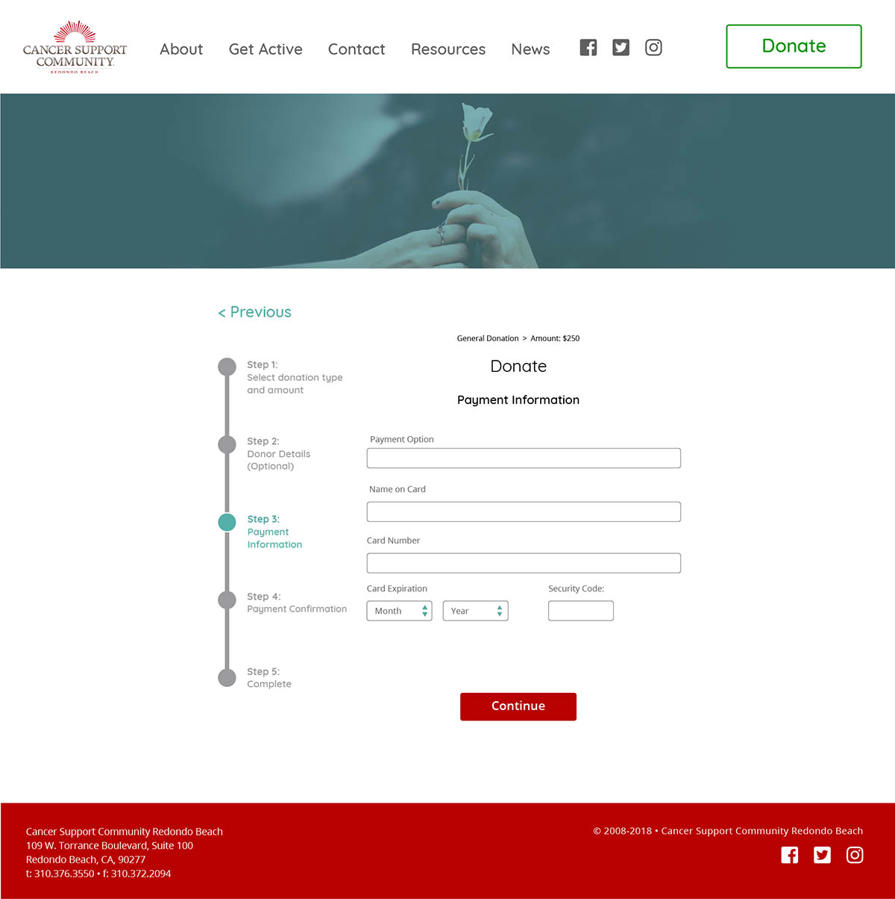
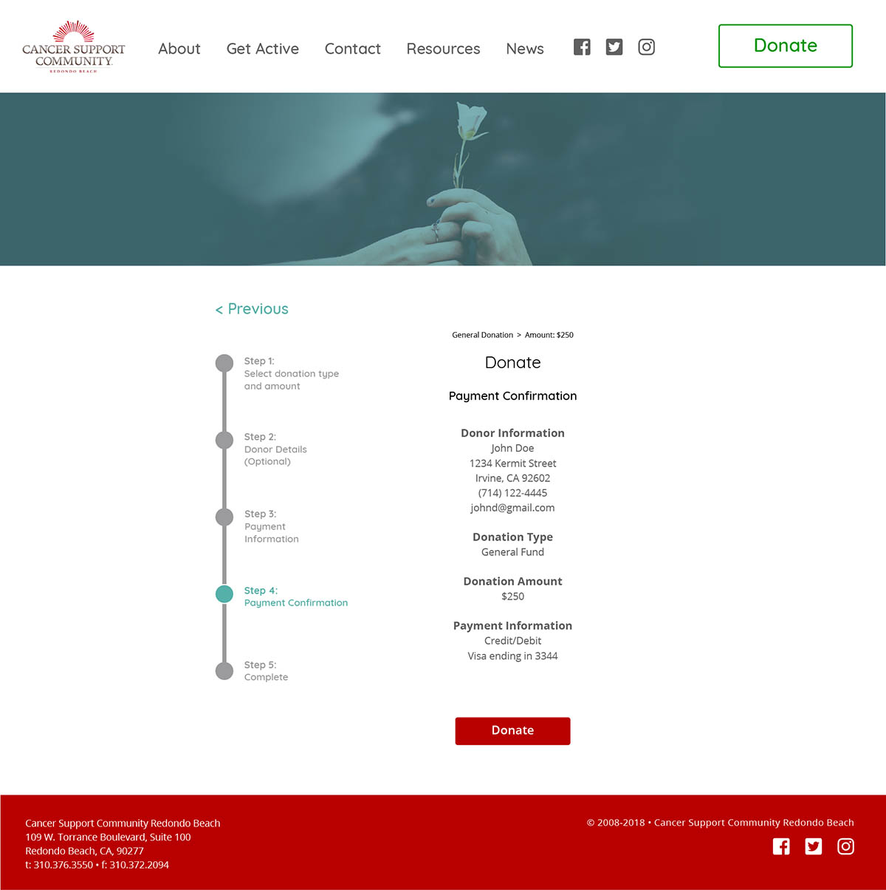
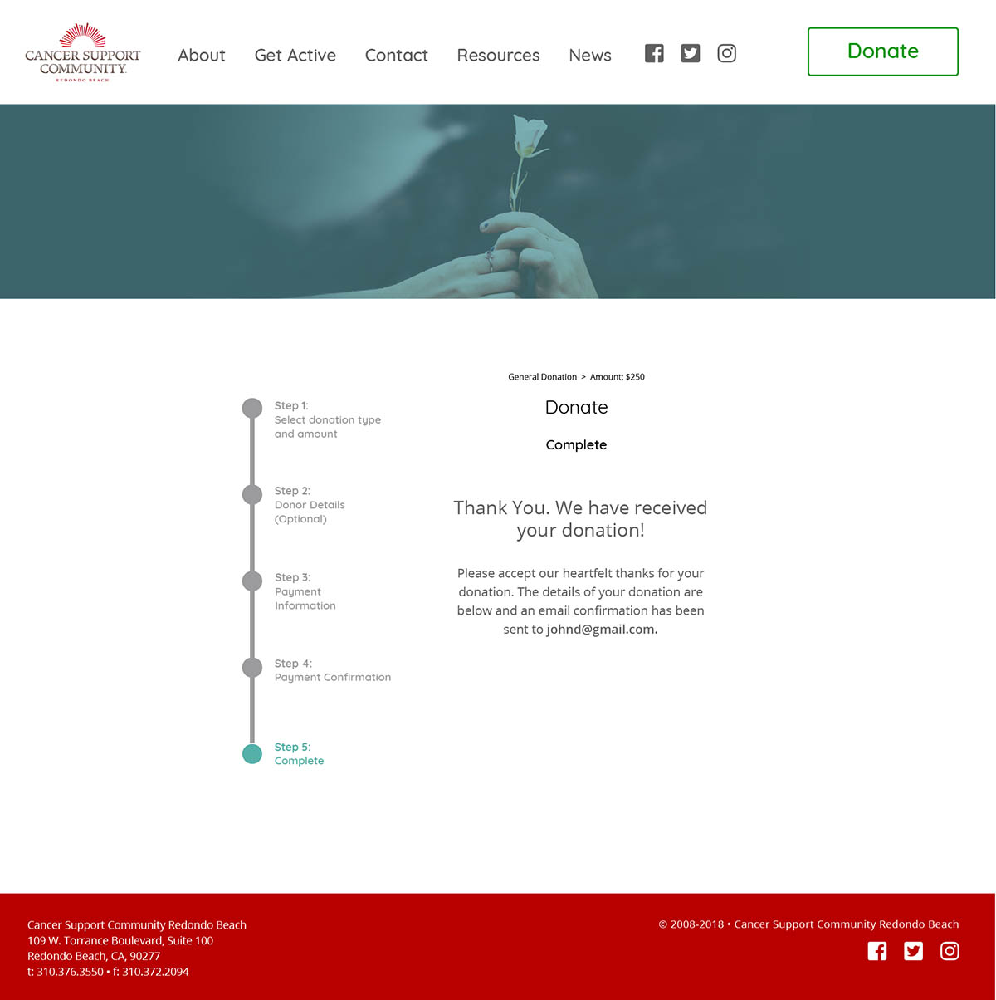
A contact form has been added to give the user greater accessibility to CSCRB. Currently there is just a list of email addresses and phone numbers, those remain as "back ups" to the contact form.
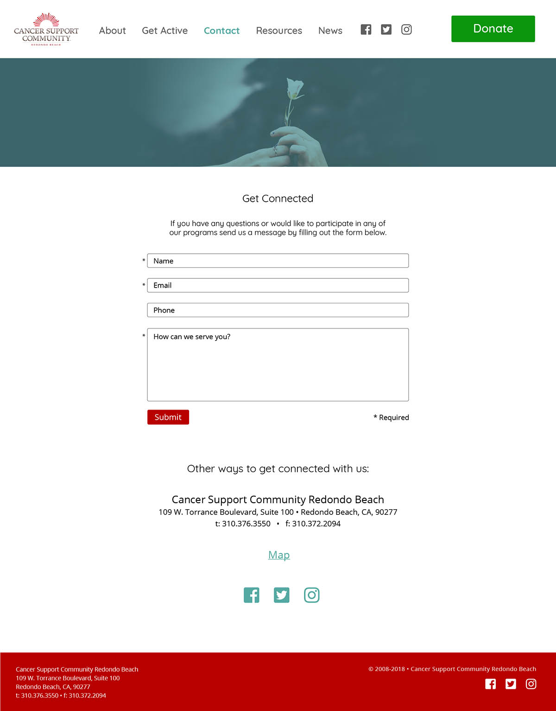
The current calendar of events is an image taken from a pdf of CSCRB's newsletter. The updated calendar below would function dynamically, allowing the user to filter according to events most relevant to their needs, along with the ability to add the event to their calendar.
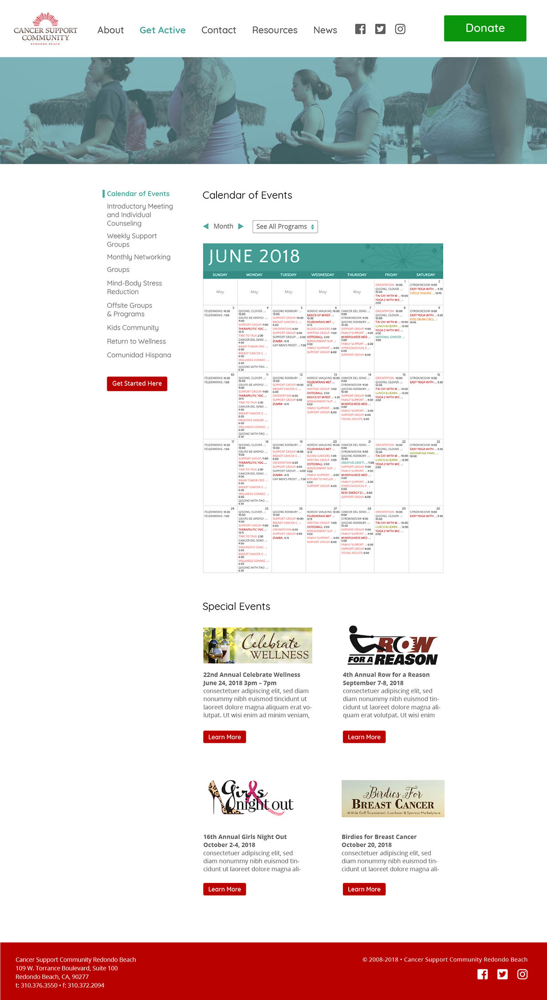
Lastly, animated prototypes were generated to show exactly how the donation process and calendar function would work.
Testing
Users were invited to examine the current website and compare it to the InVision prototype. A survey of their thoughts were taken, and the results showed that users by almost every metric preferred the redesign to the current site.
Comments from the survey were encouraging. They indicated the team was on the right track with our design:
“It looks more modern. The video with the ocean is calming and optimistic.”
“The Motion and Movement makes the site feel more alive. Color, liveliness, warmth.”
“The stats are clearer, the images are cleaner, and the donation button is easy to find.”
“Seems more legit and modern.”
Next Steps
In the short timeframe our group was able to accomplished a great deal. There are a few items we would've wanted to touch on if the opportunity to do so was there:
Submit the design to CSCRB for feedback.
Examine survey responses critical of our design over the current website and address issues that were noticed.
Consider retooling the survey to be more probative in order to try to understand a couple of things. First why people perceived the homepage appeal, as this was the only metric in which the current site outperformed the redesign. A curious development considering a majority agreed the redesgn was more appealing overall. Second, there was very little feedback (requested or given on why people overwhelmingly chose the redesigned donation and calendar flows.
Further usability testing (i.e. heatmapping) to see how (and if) people interact with the calls to action. Specifically the calendar and donation flow.
Iterate on the home page by having the navigation start at the top and A/B test that against bottom to top approach to see if there is any difference in how users respond.
Develop and test a mobile layout beyond the low-fi wireframe phase.